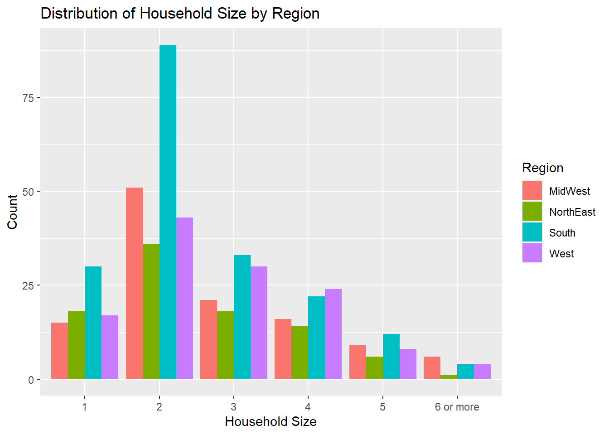
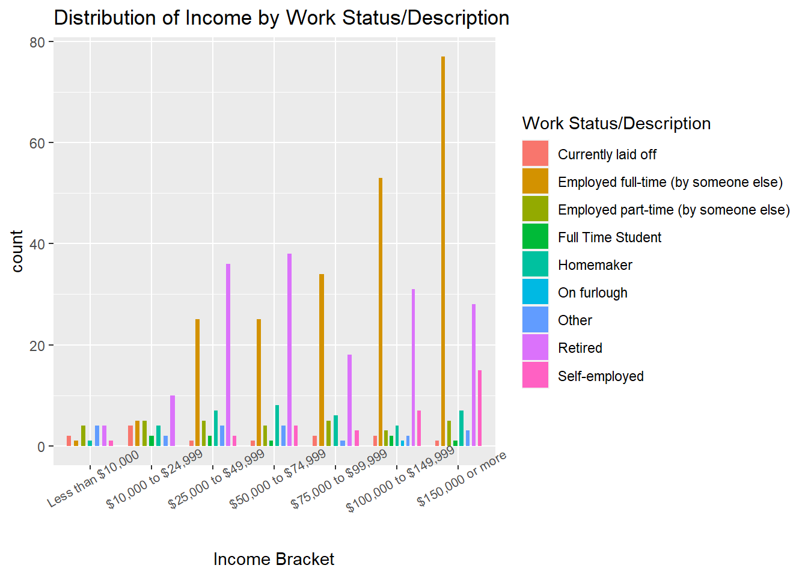

library(tidyverse)
library(ggplot2)
library(readr)
library(dplyr)
library(readxl)
library(lubridate)
knitr::opts_chunk$set(echo = TRUE, warning=FALSE, message=FALSE)Challenge 7 Post: Visualizing Multiple Dimensions of the 2021 ABC Poll
challenge_7
abc_poll
Visualizing Multiple Dimensions
Challenge Overview
Today’s challenge is to:
- read in a data set, and describe the data set using both words and any supporting information (e.g., tables, etc)
- tidy data (as needed, including sanity checks)
- mutate variables as needed (including sanity checks)
- Recreate at least two graphs from previous exercises, but introduce at least one additional dimension that you omitted before using ggplot functionality (color, shape, line, facet, etc) The goal is not to create unneeded chart ink (Tufte), but to concisely capture variation in additional dimensions that were collapsed in your earlier 2 or 3 dimensional graphs.
- Explain why you choose the specific graph type
- If you haven’t tried in previous weeks, work this week to make your graphs “publication” ready with titles, captions, and pretty axis labels and other viewer-friendly features
R Graph Gallery is a good starting point for thinking about what information is conveyed in standard graph types, and includes example R code. And anyone not familiar with Edward Tufte should check out his fantastic books and courses on data visualizaton.
(be sure to only include the category tags for the data you use!)
Read in data
Read in one (or more) of the following datasets, using the correct R package and command.
- Today, I’ll be reading in abc_poll ⭐⭐
abc.poll.1 <- read.csv("_data/abc_poll_2021.csv")
abc.poll.1dim(abc.poll.1)[1] 527 31summary(abc.poll.1) id xspanish complete_status ppage
Min. :7230001 Length:527 Length:527 Min. :18.00
1st Qu.:7230132 Class :character Class :character 1st Qu.:40.00
Median :7230264 Mode :character Mode :character Median :55.00
Mean :7230264 Mean :53.39
3rd Qu.:7230396 3rd Qu.:67.00
Max. :7230527 Max. :91.00
ppeduc5 ppeducat ppgender ppethm
Length:527 Length:527 Length:527 Length:527
Class :character Class :character Class :character Class :character
Mode :character Mode :character Mode :character Mode :character
pphhsize ppinc7 ppmarit5 ppmsacat
Length:527 Length:527 Length:527 Length:527
Class :character Class :character Class :character Class :character
Mode :character Mode :character Mode :character Mode :character
ppreg4 pprent ppstaten PPWORKA
Length:527 Length:527 Length:527 Length:527
Class :character Class :character Class :character Class :character
Mode :character Mode :character Mode :character Mode :character
ppemploy Q1_a Q1_b Q1_c
Length:527 Length:527 Length:527 Length:527
Class :character Class :character Class :character Class :character
Mode :character Mode :character Mode :character Mode :character
Q1_d Q1_e Q1_f Q2
Length:527 Length:527 Length:527 Length:527
Class :character Class :character Class :character Class :character
Mode :character Mode :character Mode :character Mode :character
Q3 Q4 Q5 QPID
Length:527 Length:527 Length:527 Length:527
Class :character Class :character Class :character Class :character
Mode :character Mode :character Mode :character Mode :character
ABCAGE Contact weights_pid
Length:527 Length:527 Min. :0.3240
Class :character Class :character 1st Qu.:0.6332
Mode :character Mode :character Median :0.8451
Mean :1.0000
3rd Qu.:1.1516
Max. :6.2553 n_distinct(abc.poll.1$ppstaten)[1] 49Briefly describe the data
As discussed in Challenge 4, the ABC Poll dataset is most likely capturing responses from a US-based nationwide poll. Running the n_distinct () function for the state or ppstaten variable determines that responses from 49 US states were featured The dim () function reveals that there are 527 rows or observations and 31 columns or variables. We can infer from the row count that 527 people responded to the poll. From the summary () function, we can deduce that the majority of the variables seem to have character values, such as education level, gender, marital status, age, region, employment status, etc–aimed at collecting demographic data and political data. There are other variables, such as the ID number variable, the Q1-Q5 variables, the Contact variable that serve to help better organize the information and respondent preferences for further interviews collected by the poll.
Tidy Data (as needed)
Is your data already tidy, or is there work to be done? Be sure to anticipate your end result to provide a sanity check, and document your work here.
The dataset is already tidy in the sense that every value does have its own cell, each variable has its own column, and each observation has its own row.
Mutating Variables
Are there any variables that require mutation to be usable in your analysis stream? For example, do you need to calculate new values in order to graph them? Can string values be represented numerically? Do you need to turn any variables into factors and reorder for ease of graphics and visualization?
Yes,we need to reduce and clean some of the string variables to more sensible categories.
Mutating the QPID variable
In the QPID or political party identification variable, we can take the “A or An” out of cells so a response within this column, like “An Independent” becomes “Independent.”
Running the table () function shows that in addition to included political party responses of “A Democrat,” “A Republican,” and “An Independent,” there are also two types of responses in the QPID column: “Skipped” or “Something Else.” The “Something Else” response can remain as is but we can re-code the “Skipped” value to read as NA instead of “Skipped.”
# view the QPID column in the abc.poll.1
table(abc.poll.1$QPID)
A Democrat A Republican An Independent Skipped Something else
176 152 168 3 28 # mutate so that "A" or "An" can be removed from party identification responses and so that "Skipped" can read as NA
abc.poll.2 <- abc.poll.1%>%
mutate(party_id = str_remove(QPID, "A[n]*"),
party_id = case_when(
str_detect(QPID, "Skipped")~NA_character_,
TRUE~party_id
)) %>%
select(-QPID)
abc.poll.2# check
table(abc.poll.2$party_id)
Democrat Independent Republican Something else
176 168 152 28 unique(abc.poll.2$party_id)[1] " Democrat" " Independent" "Something else" " Republican"
[5] NA Seems QPID variable has been renamed party_id. As expected, it also seems like “Skipped” has been changed to NA and “Democrat,” “Republican” and “Independent” responses no longer have the word “A” or “An” before them!
Changing “Skipped” to NA in responses within the Q1-Q5 columns
When poll participants didn’t offer a response when answering the Q1-Q5 questions in the poll, a response of “Skipped” was recorded. Like we did in the previous section, we can transform this into reading as NA, for analysis purposes. Instead of mutating one ‘Q’ column at a time, we can do them simultaneously by using the across() function within mutate ().
# mutating "Skipped" to NA in the Q1-Q5 columns/variables
abc.poll.2<-abc.poll.2%>%
mutate(across(starts_with("Q"), ~ na_if(.x, "Skipped")))
abc.poll.2# checking one of the 'Q' columns, Q1_b, to see if the NA value has taken the place of "Skipped"
table(abc.poll.2$Q1_b)
Approve Disapprove
192 322 unique(abc.poll.2$Q1_b)[1] "Approve" "Disapprove" NA Looks like NA has taken the place of “Skipped” in Q1_b (and assumingly all the Q columns) as expected!
Visualization with Multiple Dimensions
#factor to sequence household size
abc.poll.2$pphhsize <- factor(abc.poll.2$pphhsize, levels = c("1", "2", "3", "4", "5", "6 or more"))
# Distribution of Household Size by Region
ggplot(data = abc.poll.2, aes(x = pphhsize, fill = ppreg4))+
geom_bar(position="dodge")+
facet_grid()+
theme(axis.text.x = element_text(angle = 0))+
labs(title = "Distribution of Household Size by Region", x= "Household Size", y= "Count", fill= "Region")
I used a grouped bar plot to visualize the distribution of Household Size by Region–this visual was helpful in subgrouping household size into region. From this visualization, we can see that across all 4 regions, most of the people included in the poll had a household size of 2 people. Within this, we see that this particular survey recieved a heightened amount of responses from people living in the South with a household size of 2 (there seem to be a lot of responses from people living in the South within the dataset as a whole). Across the board, the North East had some of the least amount of respondents. Most northeastern residents interviewed tended to have smaller household sizes, mostly between 1 and 3 people, with noticeably less households in the North East having 4, 5, or especially 6 or more in their household. This could be because housing is more expensive in the North East and residence sizes are normally smaller (in terms of space/sq. footage). This could also be because family size on average might be smaller in the North East than in other regions, but we do not know from the data if household size and family size are used interchangeably–household size can encompass non-family members. Even though prices have been and continue to rise across the board with inflation, households with a larger number of members may be more likely to find more spacious and affordable housing in other regions. From the results of this poll, it seems like most respondents with household sizes of 5 or “6 or more” live in the South, the Midwest, with the West not tagging too far behind.
# check to see respondents per region
table(abc.poll.2$ppreg4)
MidWest NorthEast South West
118 93 190 126 This table check confirms that, filtered by region, the South has the most respondents, followed by the West and Midwest (which are very close together–from the graph, in my opinion it seems like the Midwest has slightly more), and lastly the Northeast.
# factor to sequence income
abc.poll.2$ppinc7 <- factor (abc.poll.2$ppinc7, levels = c("Less than $10,000", "$10,000 to $24,999", "$25,000 to $49,999", "$50,000 to $74,999", "$75,000 to $99,999", "$100,000 to $149,999", "$150,000 or more"))
# Distribution of Income by Work Status
ggplot(data = abc.poll.2, aes(x= ppinc7, fill= PPWORKA))+
geom_bar(width= .5, position= position_dodge(width = .8))+
facet_grid()+
theme(axis.text.x = element_text(angle = 30, size = 8))+
labs(title= "Distribution of Income by Work Status/Description", x= "Income Bracket", fill= "Work Status/Description")
I used a grouped bar plot again to visualize the distribution of Income sorted by Work Status/Description–this was fitting to display the different work statuses/descriptions alongside one another per income bracket. The respondents in this poll seem to skew towards being higher earners. Lower income respondents are not represented as much in comparison, perhaps because their work schedules are less likely to afford them with as much time and flexibility to participate in the poll. As we can see, for respondents making $25,000 and above, they are mostly either Employed full-time (by someone else) or Retired. In the “$25,00 to $49,999” and “$50,000 to $74,999” we see a higher number of respondents who are Retired vs Employed and working full time. The amount of workers who are “Currently laid off” seems to be about the same in the “less than $10,000” and “$75,000 to $99,999” brackets but seems the highest in the “$10,000 to $24,999” bracket. This poll was taken in 2021, during the pandemic, an era in which layoffs and other economic downturns are occuring; this can potentially inform the frequency of layoffs by income.